Source unique : tokens.json → tokens.css. Règles complètes : README.md. Écarts relevés dans l'app : ECARTS.md. Les boutons en haut changent l'ambiance de toute la planche (sauf le Studio, toujours sur lin).
Série « à venir » : texte à 55 % — 3,7 : 1 en clair, voir ECARTS n° 2.
Le coach est tutoyé (c'est Corentin qui lit) ; le client est vouvoyé.
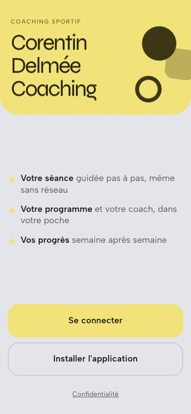
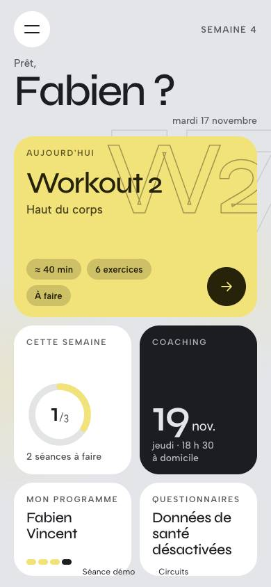
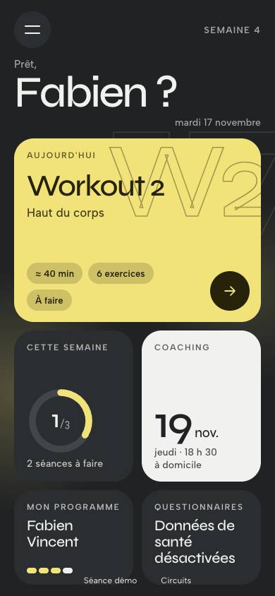
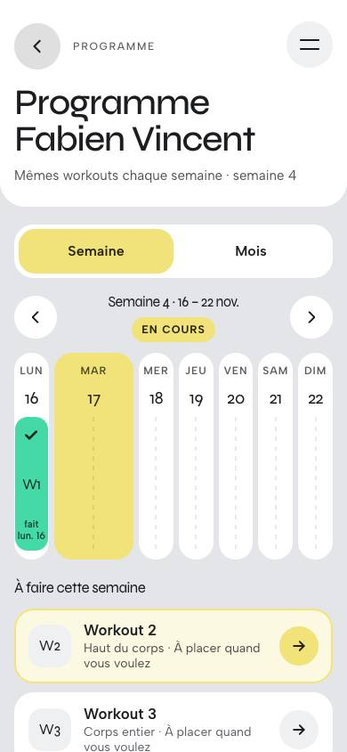
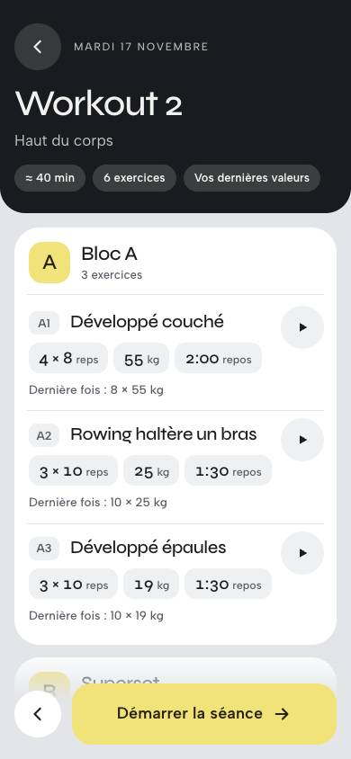
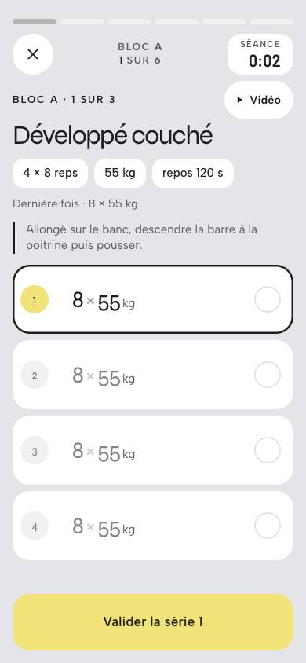
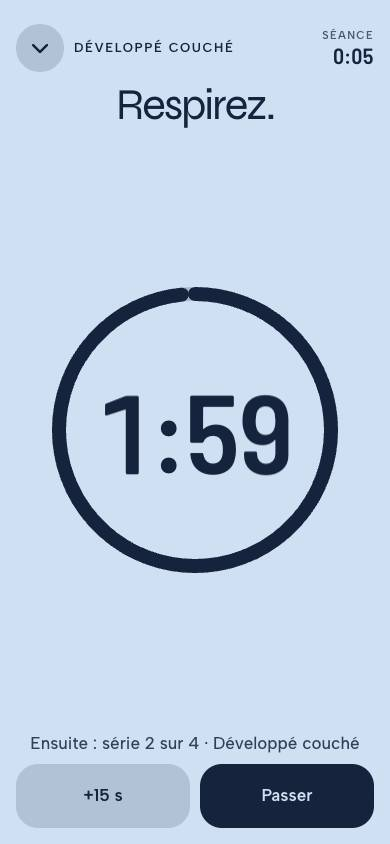
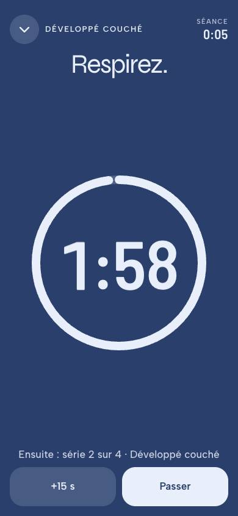
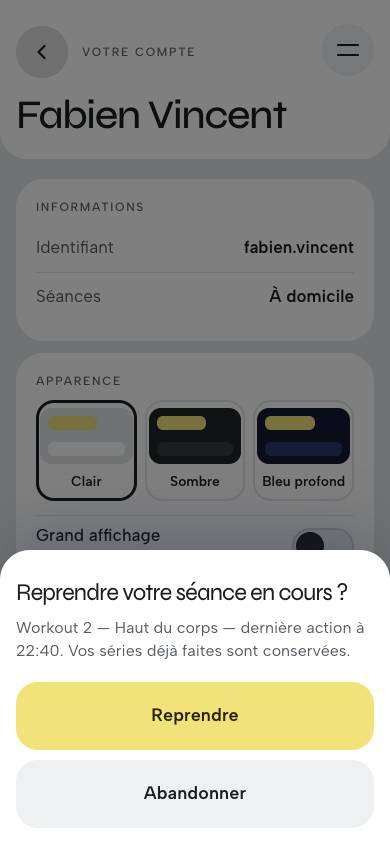
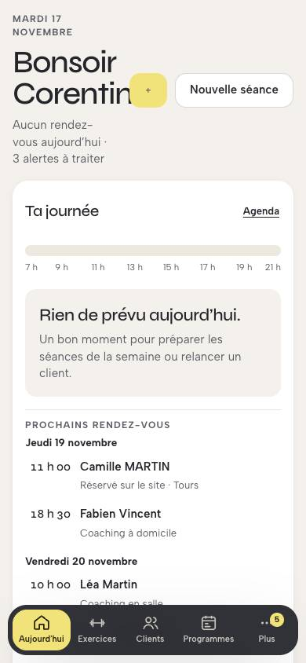
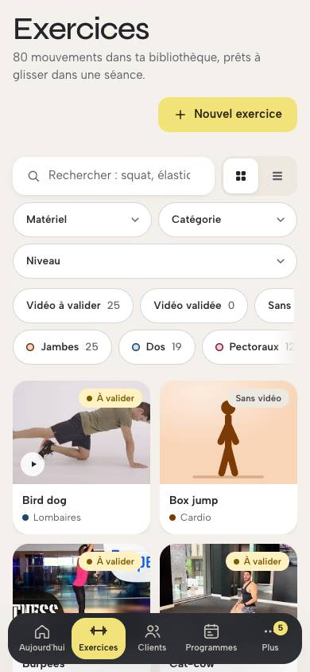
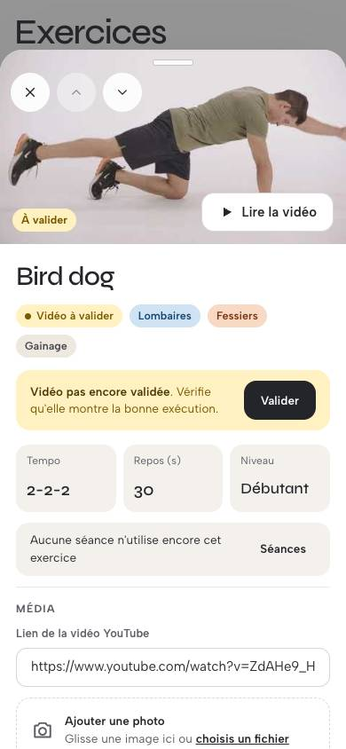
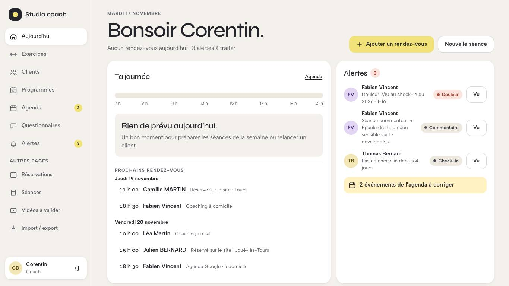
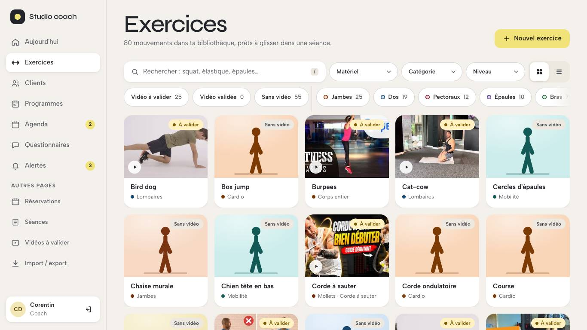
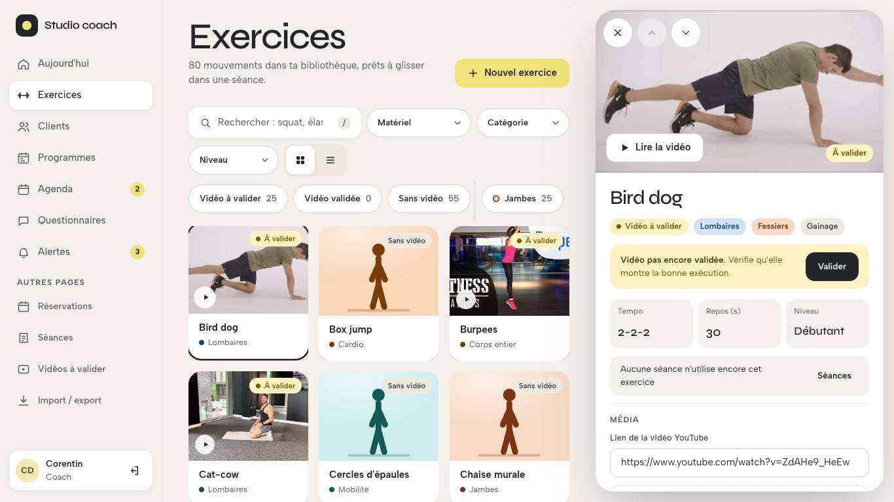
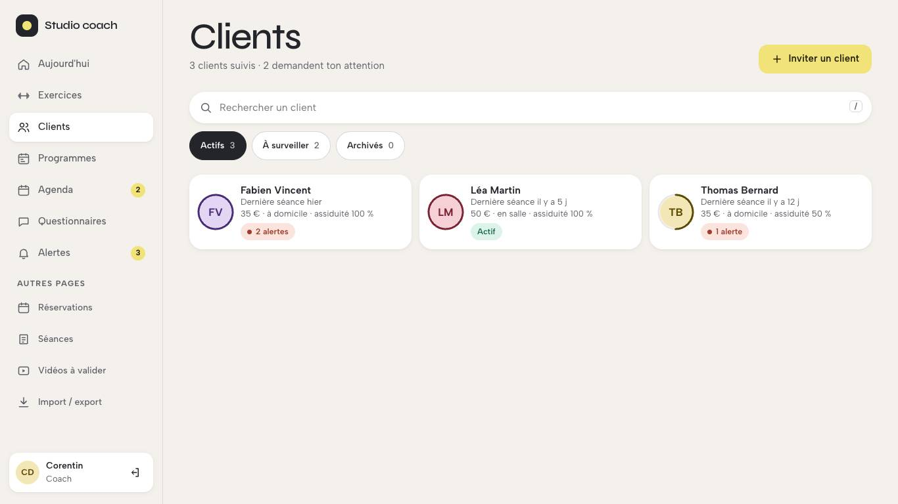
Touchez une piste : même distance, courbes différentes. Appuyez sur les boutons plus haut pour sentir le ressort.